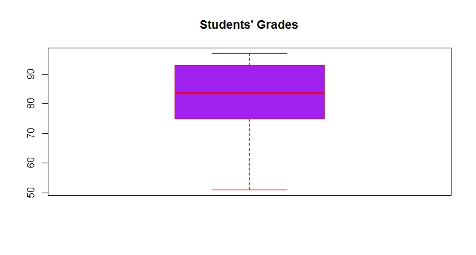

Construct Box plots
Introduction
A box plot shows the five number summery of a quantitative variable. The five number summary includes minimum, first quartile (Q1), median, third quartile (Q3), and maximum. Outliers are either 3 × IQR or more above the third quartile or 3 × IQR or more below the first quartile.
Knowledge
An example of a box plot is shown in figure 7. Outliers may be plotted as individual points.
Figure 7. An example of a box plot.
A single box plot can be drawn for one batch of data with no distinct groups. Alternatively, multiple box plots can be drawn together to compare multiple data sets. The R function for boxplot is
boxplot(x, boxwex=, varwidth=, border=, col=, horizontal=)
or
boxplot(y~group, data=, width=, varwidth=, border=, col=, horizontal=)
x: vector of data
y~group: y is a numeric vector of data values to be split into groups according to the grouping variable, which is a factor.
boxwex: a number to indicate the width of the box
varwidth: logic value. If varwidth is TRUE, the boxes are drawn with widths proportional to the square-roots of the number of observations in the groups
border: an optional vector of colors for the outlines of the boxplots.
col: if col is non-null, it is assumed to contain colors to be used to color the bodies of the box plots. By default they are in the background color.
horizontal: a logical value indicating if the boxplots should be horizontal; default FALSE means vertical boxes
Key Points to Remember
A box plot shows the five number summary of a variable. The R function is boxplot().
Practice and Reflection
Practice
Example 5: Make a box plot for the ten students grades shown in the following table
| 96 | 67 | 82 | 51 | 97 | 76 | 85 | 88 | 93 | 75 |
The box plot is shown in figure 8 below

Figure 8. Box plot of students’ grades.
Example 6: Use R data mtcars to generate a box plot to show the five number summary of miles per gallon for the three types of cylinders. The R code is
The boxplot is shown in figure 9 below:
Figure 9. Box plot of miles per gallon for 4-cylinder, 6-cylinder, and 8-cylinder cars.
Reflection
Activity 6 Use R data ToothGrowth to generate a box plot to show the five number summary of tooth length for each dosage.
Assessment
If there are 12 students in a statistics class and the 12 students’ grades are
72 83 95 75 78 86 88 93 75 89 85 97
Generate a box plot to show the five number summary. Make the width of the box as 0.4.
Use the R dataset ToothGrowth to generate multiple box plots in one graph to show the five number summary of tooth length(len) for the two supplement type (supp). Add x- and y-axis labels. Add title and legend to the graph.